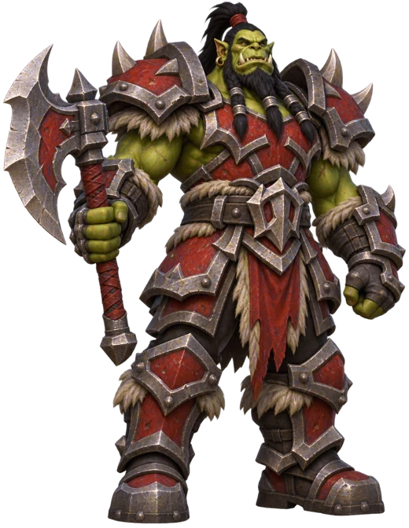
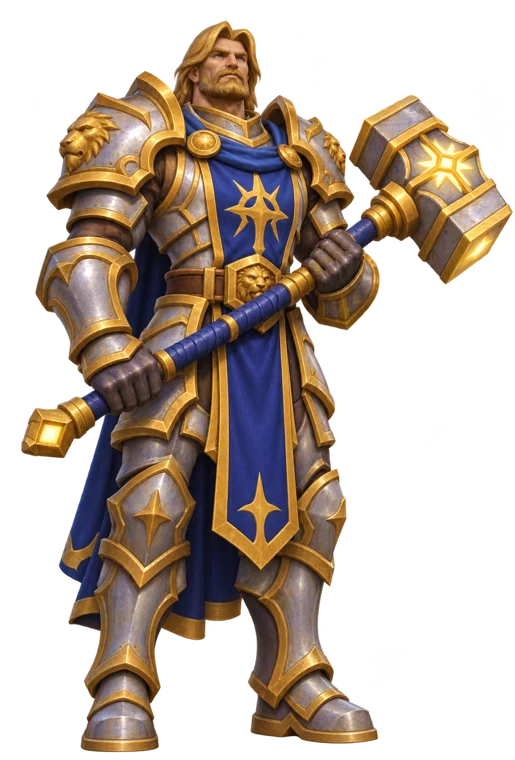
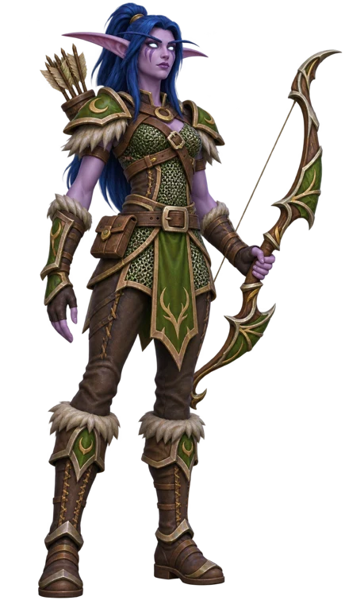
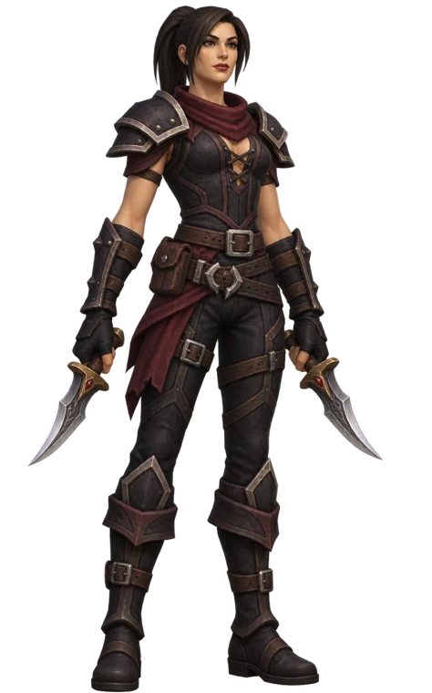
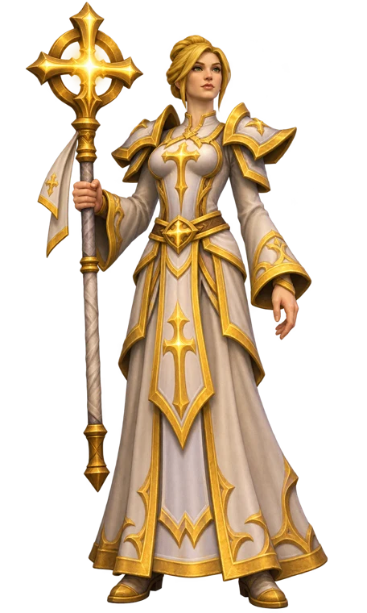
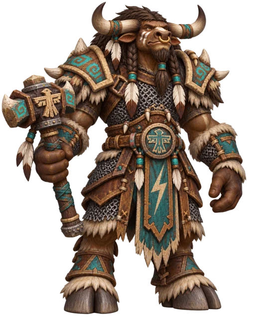
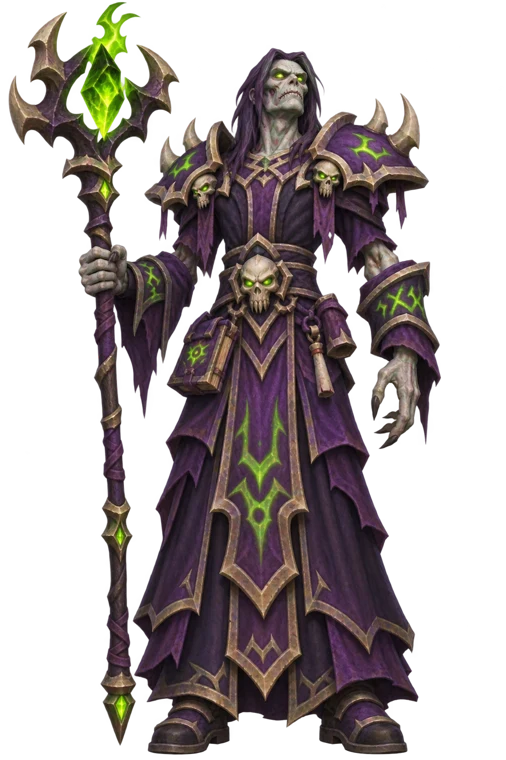
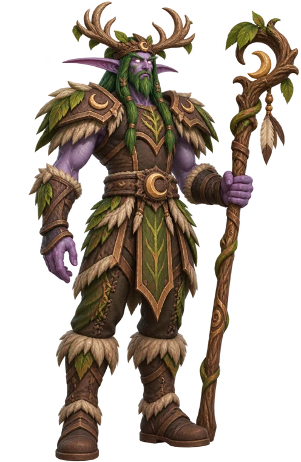

News › Équipement › BiS niveau 60
Meilleur équipement (BiS) niveau 60
Pour chaque classe, la meilleure pièce à viser dans chaque emplacement avant les raids : donjons du niveau 60, quêtes et métiers. Passe la souris sur un objet pour voir ses caractéristiques.
📅 Mise à jour le 4 novembre 2026🛠 Patch 1.60.1.70755
Guerrier Dégâts (Fureur / Armes)
- TêteHeaume Coeur-de-lionForge (295)
- CouJoyau impérialEmpereur Dagran Thaurissan, Profondeurs de Rochenoire
- ÉpaulesShoulderplates of DreadForge (225)
- DosCape du baron noirBaron Rivendare, Stratholme
- TorseCuirasse de vaillanceGénéral Drakkisath, Pic Rochenoire supérieur
- PoignetsBracières du champ d'honneurChef de guerre Rend Blackhand, Pic Rochenoire supérieur
- MainsGriffes de rapineurSeigneur Wyrmthalak, Pic Rochenoire inférieur
- TailleCeinturon de BrigamGénéral Drakkisath, Pic Rochenoire supérieur

- JambesJambières titanesquesForge (295)
- PiedsBottes du chasseur de guerreMonstres de Profondeurs de Rochenoire
- DoigtAnneau de puissance mortelleGénéral Drakkisath, Pic Rochenoire supérieur
- DoigtAnneau de noirepierrePrincesse Theradras, Maraudon
- BijouMagnétite de contre-attaqueCoffre du tribut, Hache-Tripes Nord
- BijouCœur gelé de la montagneEnchantement (260)
- Main droiteFléau du tréantCoffre du tribut, Hache-Tripes Nord
- Main gauche—
- À distanceCorbeau noirChasseresse des ombres Vosh'gajin, Pic Rochenoire inférieur
Paladin Tank (Protection)
- TêteHeaume en thorium enchantéForge (295)
- CouCollier de VerekVerek, Profondeurs de Rochenoire
- ÉpaulesSpallières volumineuses en ferMonstres de Hache-Tripes Est
- DosCape changeanteTravail du cuir (295)
- TorseCuirasse en thorium enchantéForge (295)
- PoignetsGarde-poignets de sentinelleForge (225)
- MainsGantelets de la forteresseForge (295)
- TailleSangle de sentinelleForge (245)

- JambesJambières du Chef de guerreChef de guerre Rend Blackhand, Pic Rochenoire supérieur
- PiedsBottes ShalehuskPanzor l'Invincible, Profondeurs de Rochenoire
- DoigtAnneau de chairRamstein Grandgosier, Stratholme
- DoigtAnneau du roi ogreRoi Gordok, Hache-Tripes Nord
- BijouCharme de vigilanceImmol'thar, Hache-Tripes Ouest
- BijouMagnétite de contre-attaqueCoffre du tribut, Hache-Tripes Nord
- Main droiteMasse uséePrince Tortheldrin, Hache-Tripes Ouest
- Main gaucheDéflecteur draconienGénéral Drakkisath, Pic Rochenoire supérieur
- À distanceExcavated DaggerMonstres de Site de fouilles des Paluns
Chasseur Dégâts
- TêteHeaume en écailles de dragon noirTravail du cuir (295)
- CouTalisman EmberfuryPyrogarde Prophète ardent, Pic Rochenoire supérieur
- ÉpaulesGarde-épaules de la milice de StratholmeMonstres de Stratholme
- DosMastercrafted Shifting CloakTravail du cuir (295)
- TorseCotte d'anneaux de gladiateur sauvageGorosh le Derviche, Profondeurs de Rochenoire
- PoignetsSwift Flight VambracesTravail du cuir (295)
- MainsGantelets de précisionIllyanna Ravenoak, Hache-Tripes Ouest
- TailleCeinturon de tireur d'éliteUrok Hurleruine, Pic Rochenoire inférieur

- JambesJambières de destructionRoi Gordok, Hache-Tripes Nord
- PiedsBottes du DéchireventKirtonos le Héraut, Scholomance
- DoigtAnneau elfique terniCoffre du tribut, Hache-Tripes Nord
- DoigtAnneau de puissance mortelleGénéral Drakkisath, Pic Rochenoire supérieur
- BijouCœur gelé de la montagneEnchantement (260)
- BijouMagnétite de contre-attaqueCoffre du tribut, Hache-Tripes Nord
- Main droiteFléau du tréantCoffre du tribut, Hache-Tripes Nord
- Main gauche—
- À distanceCarabine en arcanite sans défautIngénierie (295)
Voleur Dégâts
- TêteMasque du CondamnéLe Condamné, Stratholme
- CouJoyau impérialEmpereur Dagran Thaurissan, Profondeurs de Rochenoire
- ÉpaulesEpaulières de précisionPyrogarde Prophète ardent, Pic Rochenoire supérieur
- DosCape du baron noirBaron Rivendare, Stratholme
- TorseArmure de l’aubeTravail du cuir (295)
- PoignetsVoid-Powered Slayer's VambracesIngénierie (225)
- MainsGantelets diablosauresTravail du cuir (260)
- TaillePouvoir des GrumegueulesTravail du cuir (260)

- JambesJambières du chien pestiféréMonstres de Stratholme
- PiedsBottes de la mangousteTravail du cuir (285)
- DoigtAnneau elfique terniCoffre du tribut, Hache-Tripes Nord
- DoigtAnneau de puissance mortelleGénéral Drakkisath, Pic Rochenoire supérieur
- BijouMagnétite de contre-attaqueCoffre du tribut, Hache-Tripes Nord
- BijouCœur gelé de la montagneEnchantement (260)
- Main droiteEloquenteForge (295)
- Main gaucheEloquenteForge (295)
- À distanceCorbeau noirChasseresse des ombres Vosh'gajin, Pic Rochenoire inférieur
Prêtre Soins (Sacré)
- TêteIncandescent Mooncloth CircletCouture (290)
- CouChaîne de cou animéeRamstein Grandgosier, Stratholme
- ÉpaulesEpaulières en étoffe lunaireCouture (265)
- DosPeau du FauveTravail du cuir (295)
- TorseHabit de vraie foiCouture (285)
- PoignetsCrispins d’or-du-NéantCouture (195)
- MainsGants du héraut exaltéPrincesse Moira Bronzebeard, Profondeurs de Rochenoire
- TailleCorde de vigne-fouetAlzzin le Modeleur, Hache-Tripes Est

- JambesPantalon du PadreIllyanna Ravenoak, Hache-Tripes Ouest
- PiedsSouliers de couve-colonieCouture (270)
- DoigtAnneau de guérisonBalnazzar, Stratholme
- DoigtAnneau de rosetteUrok Hurleruine, Pic Rochenoire inférieur
- BijouPipeau de bruyèreJed Runewatcher, Pic Rochenoire supérieur
- BijouSecond souffleSeigneur golem Argelmach, Profondeurs de Rochenoire
- Main droiteSceptre diplomatique royalAmbassadeur Sombrefer, Gnomeregan
- Main gauchePierre étincelanteRoi Gordok, Hache-Tripes Nord
- À distanceStylet d'osSombre Maître Gandling, Scholomance
Chaman Dégâts à distance (Élémentaire)
- TêteHeaume en écailles de dragon bleuTravail du cuir (295)
- CouPendentif du Noir conseillerVectus, Scholomance
- ÉpaulesHoned Blue Dragonscale ShouldersTravail du cuir (290)
- DosPeau du FauveTravail du cuir (295)
- TorseHoned Blue Dragonscale BreastplateTravail du cuir (280)
- PoignetsGarde-bras quelconquesMonstres de Hache-Tripes Est
- MainsGantelets tempêtesTravail du cuir (265)
- TailleCeinturon du barrageMaître canonnier Willey, Stratholme

- JambesJambières en écailles de scorpide immaculéesTravail du cuir (295)
- PiedsSolerets de mande-ciel en maillesTravail du cuir (230)
- DoigtAnneau enflamméPyrogarde Prophète ardent, Pic Rochenoire supérieur
- DoigtAnneau des CyclopesOk'thor le Briseur, Profondeurs de Rochenoire
- BijouPipeau de bruyèreJed Runewatcher, Pic Rochenoire supérieur
- BijouBijou de connaissanceAmbassadeur Cinglefouet, Profondeurs de Rochenoire
- Main droiteEmprise de la foudreQuête de chaman : Les armes de la tempête
- Main gaucheTome des EgarésGénéral Drakkisath, Pic Rochenoire supérieur
- À distance—
Mage Dégâts
- TêteTurban de tisse-sortGénéral Drakkisath, Pic Rochenoire supérieur
- CouPendentif du Noir conseillerVectus, Scholomance
- ÉpaulesMantelet des GrumegueulesCouture (280)
- DosPeau du FauveTravail du cuir (295)
- TorseRobe de la nuit hivernaleCouture (235)
- PoignetsVoid-Powered Invoker's VambracesIngénierie (225)
- MainsGants de maîtrise magiqueCouture (285)
- TailleCeinture de l'archimageCouture (285)
- JambesPantalon du voile célesteGénéralissime Omokk, Pic Rochenoire inférieur
- PiedsBottines de MalekiMaleki le Blafard, Stratholme
- DoigtAnneau enflamméPyrogarde Prophète ardent, Pic Rochenoire supérieur
- DoigtAnneau des CyclopesOk'thor le Briseur, Profondeurs de Rochenoire
- BijouPipeau de bruyèreJed Runewatcher, Pic Rochenoire supérieur
- BijouBijou de connaissanceAmbassadeur Cinglefouet, Profondeurs de Rochenoire
- Main droiteBâton radieuxEnchantement (200)
- Main gauche—
- À distanceStylet d'osSombre Maître Gandling, Scholomance
Démoniste Dégâts
- TêteTurban de tisse-sortGénéral Drakkisath, Pic Rochenoire supérieur
- CouPendentif du Noir conseillerVectus, Scholomance
- ÉpaulesMantelet des GrumegueulesCouture (280)
- DosPeau du FauveTravail du cuir (295)
- TorseRobe de la nuit hivernaleCouture (235)
- PoignetsVoid-Powered Invoker's VambracesIngénierie (225)
- MainsGants de maîtrise magiqueCouture (285)
- TailleCeinture de l'archimageCouture (285)

- JambesPantalon du voile célesteGénéralissime Omokk, Pic Rochenoire inférieur
- PiedsBottines de MalekiMaleki le Blafard, Stratholme
- DoigtAnneau enflamméPyrogarde Prophète ardent, Pic Rochenoire supérieur
- DoigtAnneau des CyclopesOk'thor le Briseur, Profondeurs de Rochenoire
- BijouPipeau de bruyèreJed Runewatcher, Pic Rochenoire supérieur
- BijouBijou de connaissanceAmbassadeur Cinglefouet, Profondeurs de Rochenoire
- Main droiteBâton radieuxEnchantement (200)
- Main gauche—
- À distanceStylet d'osSombre Maître Gandling, Scholomance
Druide Tank (Combat farouche, ours)
- TêteHeaume de l’ours de guerreTravail du cuir (295)
- CouCollier de VerekVerek, Profondeurs de Rochenoire
- ÉpaulesMantelet doré de l'AubeTravail du cuir (290)
- DosCape changeanteTravail du cuir (295)
- TorseHarnais de l'ours de guerreTravail du cuir (245)
- PoignetsGarde-bras de la brume noireLa Bête, Pic Rochenoire supérieur
- MainsGants de tir rapideImmol'thar, Hache-Tripes Ouest
- TaillePouvoir des GrumegueulesTravail du cuir (260)

- JambesJambières d'acrobateGénéral Forgehargne, Profondeurs de Rochenoire
- PiedsBottes couvertes de cendresArchiviste Galford, Stratholme
- DoigtAnneau de chairRamstein Grandgosier, Stratholme
- DoigtAnneau du roi ogreRoi Gordok, Hache-Tripes Nord
- BijouCharme de vigilanceImmol'thar, Hache-Tripes Ouest
- BijouMagnétite de contre-attaqueCoffre du tribut, Hache-Tripes Nord
- Main droiteCharge du maîtreSombre Maître Gandling, Scholomance
- Main gauche—
- À distanceExcavated DaggerMonstres de Site de fouilles des Paluns
Ces listes sont calculées avant le lancement, sans le butin de raid ni les objets au-dessus du niveau d'objet 63. Beaucoup de caractéristiques reprennent encore les valeurs de Classic : elles évolueront quand les joueurs atteindront le niveau 60.
Listes d'après wow4ever.quest, noms français d'après les données du jeu, info-bulles Wowhead. Illustrations des classes : ForeverWoW.